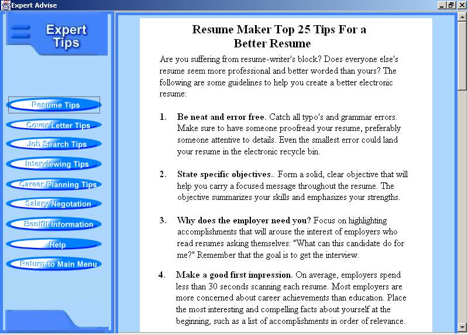
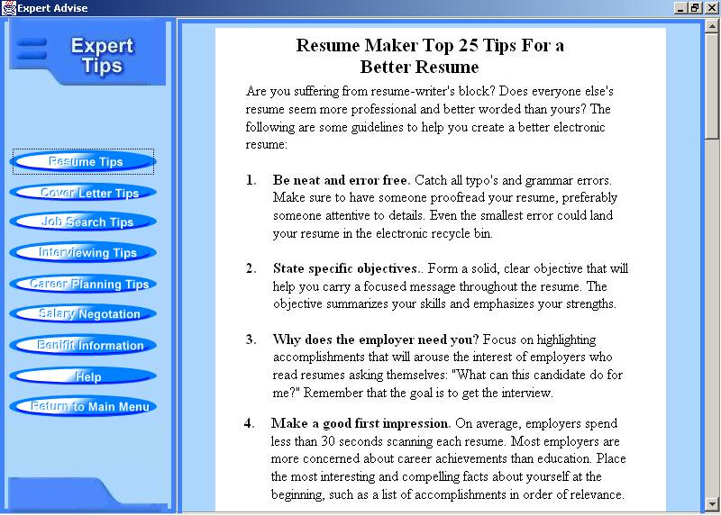

Resume Maker’s Expert Advice is loaded with valuable facts and tips on how to get the job or career you want. Special features include hot tips and useful information about interviewing, questions you will need to be prepared to answer, and advice on interviewing etiquette. Find out what works and what doesn't work when searching for a job.
To Display Expert Advice |
